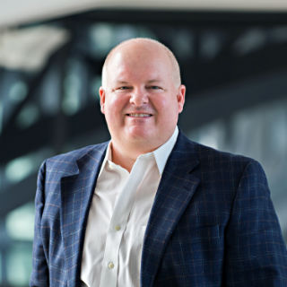
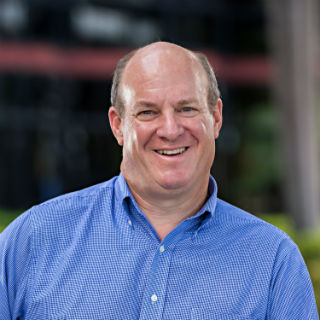
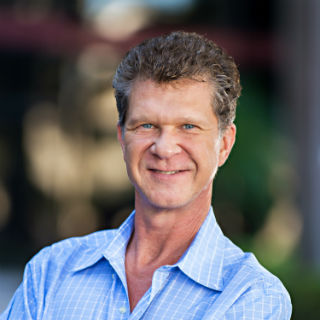
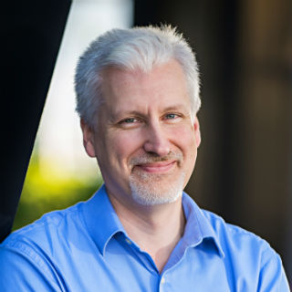
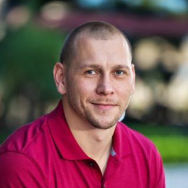
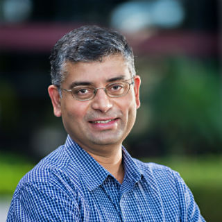
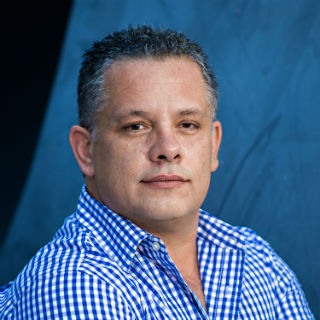

Our management team is an experienced group, and we’ve disrupted old industries before, but we still think like young people. We get to the point and stay focused on what matters most to customers.
When we listed out the things we wanted for our own families in a distributor of TV channels, we realized that no company did all of those things yet.
Then we knew we had to try to build that company ourselves. So we did. Our Board of Directors is comprised of industry giants and brilliant minds.
We’re lucky to have them. Ditto for our investors. Our team may be distinguished, but no one here takes themselves too seriously. That’s how you build a company that people want to join. Here’s a little bit more about our collective backgrounds.
Our Executives
Michael Tribolet, Chairman, Co-Founder, & CEO

Michael Tribolet is a result driven entrepreneur with extensive experience in
building & selling fast growth high-tech small business, enterprise networks and consumer based
businesses.
His competency includes administration, business development, customer care, marketing, operations,
sales, strategy and overall management of companies. With over 20+ years
experience building privately and publicly owned companies with cross border operations, Michael has
been instrumental in developing strategy and achieving the tactical milestones
necessary to manage company growth. Most recently, Michael served as CEO/Managing Director of ACN
Europe, where he was responsible for $500M+ Annual Revenues in direct
marketing sales of telecommunications, broadband and energy products. Prior to ACN, he was brought
on to serve as President at VONAGE growing the company to 2.6 million paying
customers increasing revenues from $2M – $900M in less than 5 years. Michael participated in the
raising of $1Billion dollars during his tenure at Vonage and responsibilities included
overseeing sales, marketing, customer care and a variety of operational functions such as system
operations & applications management, carrier relations, network operations, logistics
and quality assurance. Prior to joining Vonage, Mr. Tribolet served as Vice President of Operations
at Dialpad Communications which sold to Yahoo. Prior to Dialpad, Mr. Tribolet served
as President of Data Products International where he oversaw the global build-out of Internet
telephony services.
Carmen Tribolet, Co-Founder & Executive VP
Carmen Tribolet has over 15 years of proven Telecommunications experience. She
served as Director of The Americas for Telecom Italia Sparkle where she was responsible for
overseeing their International data/IP sales and marketing efforts. During her tenure, she
successfully brought in key global accounts and tripled revenues among their Latin America, Europe
and Asian Markets. Telecom Italia is one of the largest telecom companies in the world with annual
revenues of $31Billion. Prior to TIS, Carmen managed International Voice operations for IDT Telecom
where she played a key role within their cost saving objectives and international commercial
initiative. IDT's annual revenues are $1.6B and is the leader in prepaid calling around the world.
Chuck Gaspari, Co-Founder & CLO

Chuck Gaspari has a strong background in strategic business operations, capital sourcing and strategic relationships, encompassing startup development, marketing, sales, mergers and acquisitions, and corporate policies and practices. He founded G&G Sports and Entertainment Group, Inc., and has worked with Motorola, Comcast and teams and clients in the NBA, NHL, PGA, LPGA and Major League Baseball. Gaspari also served as a White House staff assistant to then Vice President George H.W. Bush and as a
judicial law clerk for a U.S. Magistrate for the Southern District of Florida.
Mark Holodnak, CFO

Mark Holodnak has had an extensive career spanning from IBM, GE Capital, Tetra
Pak, Inter- Tel and most notably as the founding VP Finance/Controller for Vonage (pre-IPO). At
Vonage he was instrumental in creating the Finance department and implementing systems and processes
that became the foundation for its exponential growth and eventual IPO. His record of achievement
includes establishing a World-class finance operation including financial reporting, cash
management, treasury, risk management, budgeting and forecasting, contract negotiation and inventory
management. Since Vonage he has advised various companies on acquisitions, due diligence, and system
implementations. In this capacity, he has assisted both buyers and sellers and has significant
experience working with private equity firms and investment bankers. Most recently, He managed a two
year-long turnaround, investment valuation, equity sale and eventual wind-down of a diversified
media venture. He holds an MBA from Rider University in Lawrenceville NJ has lived in the New York
City area for many years and now resides in Phoenix, AZ with his family.
Ian Wismann, Chief Marketing Officer

Ian Wismann’s career has spanned two decades at Fortune 100 firms including
Citibank and Chase, and nimble start ups including Vonage and Snackable Media. A digital marketing
veteran, he has generated a half billion dollars in start up revenues. At Vonage he conceived and
executed the online acquisition plan that acquired the majority of the firm's customers between 2002
- 2005, and also launched the brand internationally. At Snackable Media, Ian spearheaded
partnerships with MTV Networks, Endemol, and other television stakeholders to generate revenue
streams that capitalized on television content extensions to mobile devices. In 2010 Ian billed
nearly 1% of all mobile premium SMS revenues in the United States, and his VH1 Text 2 Win product
was nominated for a Mobile Excellence Award for Best Category Extension in Television. Ian is a
former Partner at the advertising agency Ogilvy & Mather and has served on the Board of Directors of
the Bankers Conseco Life Insurance Company since 2001. Additionally he serves on the Board of
Directors of Seven Minds, a mobile software developer that produces assistive technology for special
needs children on three continents. Ian is married with four children, and holds an MBA in
Information Systems from Fordham University.
Giancarlo Paolillo, Chief Information Officer
Giancarlo Paolillo has held positions ranging from CIO at ACN, CTO at X Plus
One, and Head of Emerging Technologies for Household International (now HSBC) where he was
responsible for the design and support of over 30 million credit card customers within their
E-commerce solutions in EU and USA. In addition Giancarlo was the Senior VP of Engineering for
Vonage where he scaled the infrastructure and software development solutions from 6 points of
presence to 36 in under two years with clients from less than 100k to greater than 2 million. His
responsibilities and experience encompass Network infrastructure, Systems engineering, Capacity
planning, Network security, Ecommerce infrastructure, Data Base and data warehouse solutions, backup
strategies, Storage Area Networks and NOC; building, redesigning, security within the Infrastructure
and software engineering of each organization dealing with Network, Systems, and Applications and
has created security teams trained by him. During the span of his career, Giancarlo has built data
centers; ground up Security teams; disaster recovery sites; migrated companies to meet SOX/AS5
compliance; Storage Life Management solutions; Re-vamped software architectures to scale; while
reducing overall complexity and increasing our ROI.
Tomasz Sarnowski, VP Engineering

Tomasz brings over 14 years of experience designing, building, and troubleshooting
large-scale telecommunications systems and mobile applications. His specific expertise is in vendor
software and hardware implementation and integration, business intelligence, quality assurance, and
customer care within the telecommunications industry. He has extensive background in VoIP, Mobile and
PSTN systems (Public Switched Telephone Network). Prior to joining YipTV, Tomasz was one of Vonage's first
employees, rose to the level of Senior Engineer and was also the Core Engineer as part of the original
Vonage Mobile subsidiary (Novega). After Vonage, Tomasz served as Senior Architect at Telcordia
Technologies, Inc. (Iconectiv) where he provided technical solutions and held leadership positions for
multiple telecommunications products such as Mobile ID and Resolver. In his spare time, he founded
Message Sprout, a web based SMS, Voice and Email messaging system for small to medium businesses.
Tomasz has been an issued a patent titled: “Method and Apparatus for Telecommunication Session
Authentication Using DTMF Signaling.”
Sekar Desamangalam, VP of Business Development

Sekar Desamangalam most recently served as Director with Virtus Global Partners
where he worked on US-India cross border initiatives - M&A, JV and Alliances. He brings over 20
years of experience in Engineering & Technology industry. Prior to Virtus Global, Sekar was
responsible for CPE product development and Corporate Business Development at Vonage. In this
capacity, he also worked on new market entry initiatives including an India Entry Strategy for
Vonage. Sekar's past experience also includes stints at General Electric and Bechtel Power
Corporation working on global projects that spanned UK, China and Europe, besides the North American
market. Sekar holds an MBA from New York University, Stern School of Business, an MS from the
University of South Florida, Tampa and a BE from the Birla Institute of Technology & Science,
Pilani, India.
Victor Iasprizza, VP Content Acquisition

Victor Iasprizza brings over 15 years of telecommunications sales and management
experience in both Latin America and Europe, where he was responsible for growing Latinode’s
international wholesale and retail voice business. His responsibilities included P & L
accountability, expansion of LATAM & EMEA regions along with development of emerging markets.
Victor's leadership led to the successful growth of 35% with over $180M annual revenues and included
notable recognition as Hispanic Business Fastest-Growing Company in 2004, 2005 and 2006
Our Board of Directors
Michael Snyder, Board Member
Michael Snyder, has over 30 years of experience at the most senior levels of management, transforming and growing companies in the service and technology sectors. From 1997 to February 2006, he served as the President and Chief Operating Officer at ADT Security Services, Inc, North America, building the strategies, teams, programs, and infrastructure that grew that business from $ 690m to $4.0B in revenue with cash flows approaching $1.0b. Mike joined ADT in 1977 and served in various Sales, Sales
Management, Marketing, and Operations roles prior to 1997. Mike left ADT in 2006 to become Chief Executive Officer and Director of Vonage Holdings Inc.. In his tenure at Vonage, Mr. Snyder was responsible for recruiting and building teams, transforming marketing, and delivery systems, to produce scalability for this high growth opportunity. Vonage revenues during his tenure tripled to over $900m with a clear path to short term profitability. Also during his tenure Mike led a successful IPO effort, generating $642m and listing on he NYSE. Mike left Vonage late in 2007. Since
then he has built a successful operational consulting practice that has led to variety of successful and varied postings.He has been Executive Chairman of Castlerock Security Holdings, Inc. He was the Operational Consultant for the $2.0 acquisition of Securitas by Bain Capital in 2010. He serves as a Director of CitraPAc. He served as Advisory Board member at Proximex prior to its sale to TYCO Intl. He serves as a Board Member for the National Crime Prevention Council. Mike served as a Director of Talon International, Inc. from July 2010 to April 9, 2012. He identified and
led the effort to acquire Red Hawk Fire and Security from United Technologies on behalf of a PE firm, serving as CEO during the successful nine month transition of that company. He has also been involved in many operational, and operational diligence activities with PE and Investment banking firms over the last several years. Mr. Snyder holds a B.A. degree from The State University of New York at Oswego, Oswego, NY. He also serves on the nonprofit Boards of the National Crime Prevention Council and International Swimming Hall of Fame where he also served as Chairman.
Peter Foyo, Board Member
Peter Foyo served as CEO and Chairman of Nextel de México S. A., C. V., from 1998 through December 2013. During his tenure, Mr. Foyo was responsible for the complete functioning of the company's operations. Additionally, Mr. Foyo has held various senior management positions within AT&T Corporation, responsible for the company’s management and operations in various countries throughout Latin America. Peter was also a member of the board of directors of the Compañia de Telefonos del Interior and also
Corporate Strategy Director of Alestra, S.A. de C.V., a joint venture between AT&T and a local Mexican partner; and president of AT&T Argentina. Peter currently sits on a number of international and domestic boards including: Marquette Companies; Abraaj Group (UAE); World Fund (Mexico); and Sirran Communications amongst others. Peter’s expertise in the expansion and development of both international and domestic businesses has been widely recognized. He is extremely passionate about the business purpose of these organizations and the results his involvement provides. During
this past year he has developed an Urgent Care Plaza in Mexico that will provide healthcare for those in need; he has also driven revenues over $3.6mm for a security company that has been in business less than a year. Foyo studied International Business, Economics, Military Science and Engineering at Benedictine University and Wheaton College in Illinois.
Brian Mass, Board Member
Brian Mass has been involved in the investment banking and information technology industry for over fifteen years. Brian was a Director in Citigroup’s Global Technology Investment Banking Group and specialized in providing corporate finance and advisory services for Global Services and IT Infrastructure companies. During Brian’s tenure with Citigroup he executed over $70 billion in transactions including $6.5 billion in financings and $10 billion in acquisitions for IBM, the $14 billion sale of EDS to HP,
the $8 billion sale of ACS to Xerox, $1.5 billion in financings plus the $550 million acquisition of Headstrong for Genpact, and various other financing and advisory engagements for companies such as Accenture, EXL Service, Hewitt, interxion, SAIC, SRA, TeleTech, Unisys, West and Wipro. Prior to Citigroup, Brian was an Analyst at Rho Ventures, a venture capital firm with over $2 billion under management. Brian received a BA in Economics from Northwestern University and is FINRA Series 7 (General Securities Representative) and Series 63 (Uniform Securities Agent) registered.
Judith Adioo, Board Member
Judith Aidoo is a private investor (Caswell Capital Partners, LLC) and media and entertainment entrepreneur (Caswell Communications, Inc.) with holdings in radio broadcasting; television syndication; publishing; and feature film and theater production. Judith began her career as an investment banker in 1987 with Goldman, Sachs & Co., where she specialized in structured finance. Upon leaving Goldman in 1991, she started her own firm to both advise and invest in technology; telecommunications and media; and
financial services. She has co-managed a hedge fund with over $200 million in broadcast and entertainment assets. Ms. Aidoo has been honored for her business accomplishments and philanthropy as a board member of the following institutions: co-chair of Harvard Law School’s Class of 1987 20th Reunion Committee; WNYC, the City of New York's public radio station group chaired at the time by Mrs. Billie Tisch; President Clinton's Transition Team, responsible for covering the Federal Reserve System of the US, and as a member of his U.S. Trade Advisory Committee chaired by the US
Trade Representative at the time, Ms. Charlene Barshefsky; the US-South Africa Business Development Committee co-chaired by the US Secretaries of Commerce Brown and Daley; the Constituency for Africa; and the 2001 class of Henry Crown Fellows at the Aspen Institute which emphasizes values-based leadership in business. Most recently, Judith was nominated by her peers to the Governing Council of the Ghana Stock Exchange until 2004. Ms. Aidoo is also a founding member of the African Women’s Development Fund; the Dean of the Faculty of Arts and Sciences at Rutgers University’s
Advisory Board; and an investor and Chief Executive Officer of Capital Alliance Co., a boutique merchant bank; Caswell Communications, Inc., the operator of WPAL-FM, and one time owner and joint operator of WZJY 1480 AM, both in Charleston, SC. Judith graduated Phi Beta Kappa and with high honors from Rutgers College in 1984 and from Harvard Law School in 1987. She has been a television contributor for MSNBC and CNN, and has been profiled and quoted in major business publications on investment matters including the Wall Street Journal, Forbes, the Financial Times and Black
Enterprise.
Ed Rodriquez, Board Advisor
Ed Rodriguez has over 14 years of Hi-Tech Sales, Product Management and Consulting Services experience. He currently leads Citrix Systems (CTXS) Inside Sales division for North and South America, encompassing their small business and mid-market segments in addition to their Subscription and Hardware Maintenance Renewals teams which exceeds $500M in annual revenues. In prior roles at Citrix, Ed helped pave the way for new products leading product development releases, participating in Board meetings and
building sales teams focused on emerging markets and vertical channels. He has a degree in Computer Science and started his career at a boutique Consulting organization before joining Citrix and spending 5 years Consulting with Fortune 1000 companies on Virtualization and Mobility initiatives.
Dan Lovatt, Board Advisor
Dan Lovatt has over 30 years of experience in multi-national telecommunication and telecommunications manufacturing in the United States as well as Internationally. Most Recently, Dan served as Chief Executive Officer for PCCW Global where he was responsible for managing the Company's International Business outside of their home Market of China. Prior to PCCW, he worked as the International CFO for Lucent Technologies as well a number of Services Partners, Content Providers, Telecom Authorities and
Governmental Agencies where he held various management positions.
Bryan Buckley, Board Advisor
Commercial Director Bryan Buckley is an acclaimed award winning advertising and production executive directing over 40 Super Bowl commercials and dubbed as "The King of Superbowl" by the New York Times. Bryan's career began in 1994 with his inception of ESPNs now benchmark "This is Sportscenter" campaign. Since then, Bryan has received virtually every honor, award, and accolade in the industry securing his spot atop "best of" lists in the US and internationally. Mr. Buckley is Co-Founder of Hungryman
Productions, one of the world's largest and leading creative production agencies and has been named Commercial Director of the Year by the Directors Guild of America.